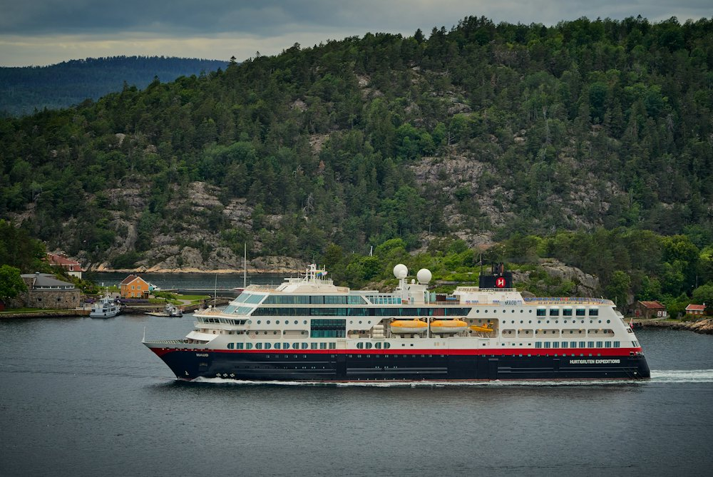

自然历年规律欧洲
海达路德沿岸航线
Hurtigruten · 挪威
最佳时间
全年；极光季 9–3 月
全年运行，极光季 9–3 月、午夜太阳 6–7 月。
挪威沿海航线，穿越峡湾与极圈，可看极光与午夜太阳。
不能错过
- 峡湾与极圈风光
- 极光 / 午夜太阳
旅人提醒
- 海况颠簸备晕船药
- 保暖
月度热力与气温
2°
1
2°
2
4°
3
7°
4
11°
5
14°
6
16°
7
15°
8
12°
9
8°
10
4°
11
2°
12
适宜度（柱高，5=最佳）依据活动窗口与气候整理；气温为月均高温近似值（°C），仅供规划参考，出行前请查当地预报。
编辑核实笔记 · 整理自公开资料，非亲历；配图为示意，现场以官方公告为准。
预订 / 官网
官方页面：查看官网 / 官方信息 ↗ · 票价与预约以官网为准
联盟链接含占位 tracking id（Booking/Klook/GetYourGuide），上线替换为真实 ID 即生效；均带 utm 参数与点击统计。